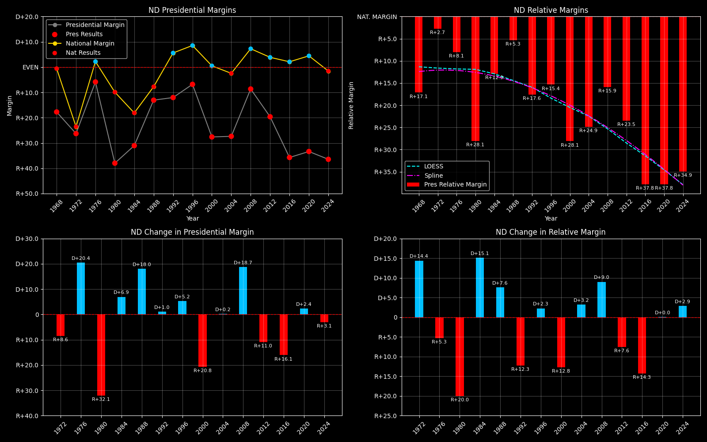

← Back to Map

North Dakota statewide
North Dakota (ND) — Data
| Year | D | R | Margin | Relative Margin | Nat'l Margin | Margin Δ | Relative Margin Δ | Nat'l Margin Δ |
|---|
| 1976 | 136078 | 153684 | R+6.1 | R+8.4 | D+2.3 | 0 | 0 | 0 |
| 1980 | 79189 | 193695 | R+42.0 | R+31.6 | R+10.3 | R+35.9 | R+23.3 | R+12.6 |
| 1984 | 104429 | 200336 | R+31.5 | R+13.2 | R+18.2 | D+10.5 | D+18.4 | R+7.9 |
| 1988 | 127739 | 166559 | R+13.2 | R+5.5 | R+7.7 | D+18.3 | D+7.7 | D+10.6 |
| 1992 | 99168 | 136244 | R+15.7 | R+23.0 | D+7.2 | R+2.6 | R+17.5 | D+14.9 |
| 1996 | 106905 | 125050 | R+7.8 | R+17.4 | D+9.6 | D+7.9 | D+5.6 | D+2.4 |
| 2000 | 95284 | 174852 | R+29.5 | R+30.0 | D+0.5 | R+21.6 | R+12.5 | R+9.1 |
| 2004 | 111052 | 196651 | R+27.8 | R+25.4 | R+2.5 | D+1.6 | D+4.6 | R+3.0 |
| 2008 | 141278 | 168601 | R+8.8 | R+16.4 | D+7.5 | D+19.0 | D+9.0 | D+10.0 |
| 2012 | 124966 | 188320 | R+20.2 | R+24.2 | D+4.0 | R+11.4 | R+7.9 | R+3.5 |
| 2016 | 93758 | 216794 | R+39.6 | R+41.9 | D+2.3 | R+19.4 | R+17.7 | R+1.7 |
| 2020 | 114902 | 235595 | R+34.4 | R+39.0 | D+4.5 | D+5.2 | D+3.0 | D+2.2 |
| 2024 | 112327 | 246505 | R+37.4 | R+35.9 | R+1.5 | R+3.0 | D+3.1 | R+6.0 |